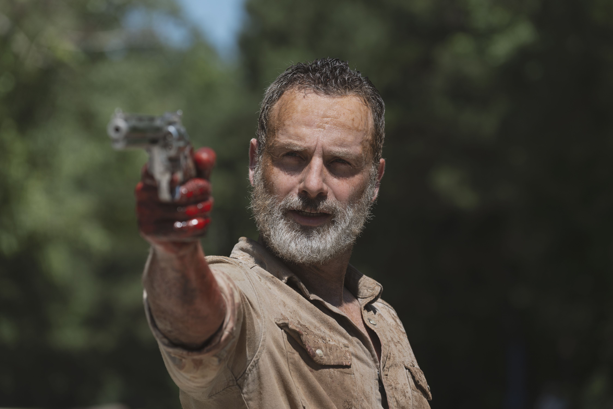

The Walking Dead es una serie de television que fue estrenada por AMC en el año 2010. La trama se desarrolla en un mundo postapocalíptico después de que la mayor parte de la población mundial se ha convertido en zombis, conocidos en la serie como caminantes. El enfoque principal de la historia es seguir a un grupo de sobrevivientes mientras luchan por mantenerse con vida en medio de amenazas tanto de los zombis como de otros grupos de humanos que han adoptado enfoques diversos para sobrevivir. Actualmente la serie cuenta con 11 temporadas pero existen otros spin-offs de la serie como Fear The Walking Dead , The Walking Dead: Dead City y otros.
El protagonista principal de la serie es Rick Grimes, el cual es un oficial de policía que se despierta de un estado de coma para descubrir que el mundo ha sido invadido por zombis. La trama sigue su lucha por sobrevivir en este nuevo y peligroso entorno, liderando a un grupo diverso de sobrevivientes mientras enfrentan no solo a los zombis, sino también a las amenazas de otros grupos de supervivientes y a los desafíos morales y éticos que surgen en un mundo apocalíptico.
Andrew Lincoln interpretó el papel de Rick Grimes en la serie de televisión The Walking Dead desde el inicio de la serie en 2010 hasta su salida en la novena temporada. Rick Grimes se convirtió en un personaje icónico en la narrativa de "The Walking Dead", y su historia es una parte fundamental tanto de los cómics como de la adaptación televisiva.
En este extenso universo no solo tenemos la serie principal, si no que tambien tenemos series secundarias, videojuegos y otros. A continuacion repasaremos los más importantes:
Fear The Walking Dead (Serie): Nos lleva hasta el principio mismo del apocalipsis zombie, una época en la que el mundo estaba cambiando rápidamente debido a causas desconocidas y antes de que alguien pudiese entender con exactitud que era lo que estaba ocurriendo
The Walking Dead: World Beyond (Serie): Cuenta con dos jóvenes protagonistas y se centra en la primera generación que ha crecido durante el apocalipsis tal y como lo conocemos. Algunas se convierten en héroes. Algunas se convierten en villanos.
The Walking Dead: A Telltale Games Series: Es una aventura gráfica, que se desarrolla desde una perspectiva en tercera persona, con una variedad de ángulos de cámara cinematográficas, en el que el jugador, como protagonista, trabaja con un grupo variopinto de supervivientes para seguir con vida en medio de un apocalipsis zombie.